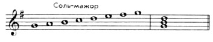
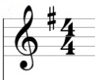

Урок 13. Тональность Соль-мажор.
Теория
Соль-мажор — это мажорная тональность, в которой главная нота (тоника) — Соль.
- В гамме Соль-мажор используются ноты: Соль, Ля, Си, До, Ре, Ми, Фа♯, Соль.
- Отличительная особенность этой тональности — наличие одного диеза (Фа♯), который пишется на нотном стане после ключа.
- Тональность Соль-мажор звучит светло и радостно, часто используется в песнях и пьесах для начинающих музыкантов.
Порядок тонов и полутонов в гамме Соль-мажор такой же, как и в любой мажорной гамме: тон — тон — полутон — тон — тон — тон — полутон.
В начале нотной строки после скрипичного ключа ставится диез на линии Фа — это знак тональности Соль-мажор.
Знание особенностей тональности помогает правильно исполнять и читать музыку.
Упражнения
- Распознавание тональности: Определите, какая тональность изображена или звучит (В начале строки стоит один диез — это Соль-мажор; В гамме Соль-мажор есть нота Фа♯; Тоника гаммы — Соль).
- Пение: Пропойте гамму Соль-мажор вверх и вниз (Соль, Ля, Си, До, Ре, Ми, Фа♯, Соль).
Аудио-примеры
Гамма Соль-мажор вверх и вниз:
Визуальные примеры
Гамма Соль-мажор на нотном стане:

Знак диез (Фа♯) после ключа:
